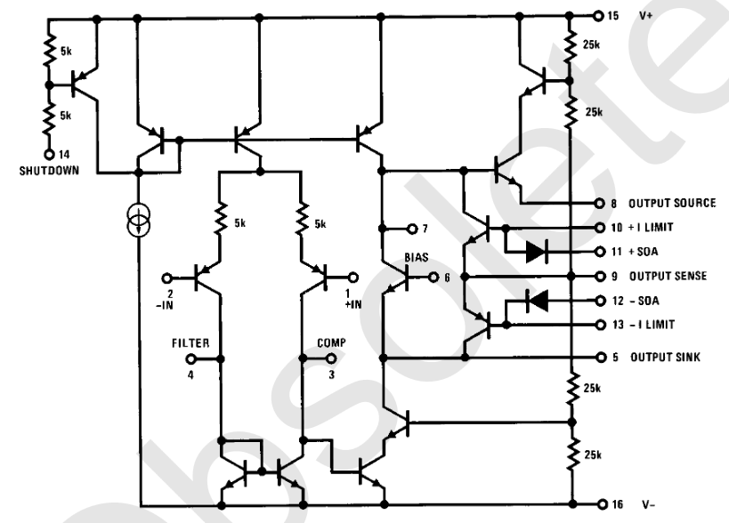

Voorbeeld 1: Klasse B versterker
Voorbeeld 1: Klasse B versterker¶

Fig. 26 Basisschema van de versterker¶

Fig. 27 Interne structuur van de versterkerchip¶

Fig. 28 Foto van de versterker¶

Fig. 29 Layout van de versterker¶

Fig. 30 Bestukking van de versterker¶
import matplotlib.pyplot as plt
import matplotlib.ticker as ticker
from matplotlib import patches
import scipy.signal as signal
import numpy as np
from PySpice.Probe.Plot import plot
from PySpice.Spice.Parser import SpiceParser
from PySpice.Spice.Netlist import Circuit
from PySpice.Unit import *
import schemdraw as schem
import schemdraw.elements as e
from ipywidgets import interact,FloatSlider
usewidgets=False;
def spicelisting(filename):
with open(filename) as f:
for line in f:
print(line.strip())
print()